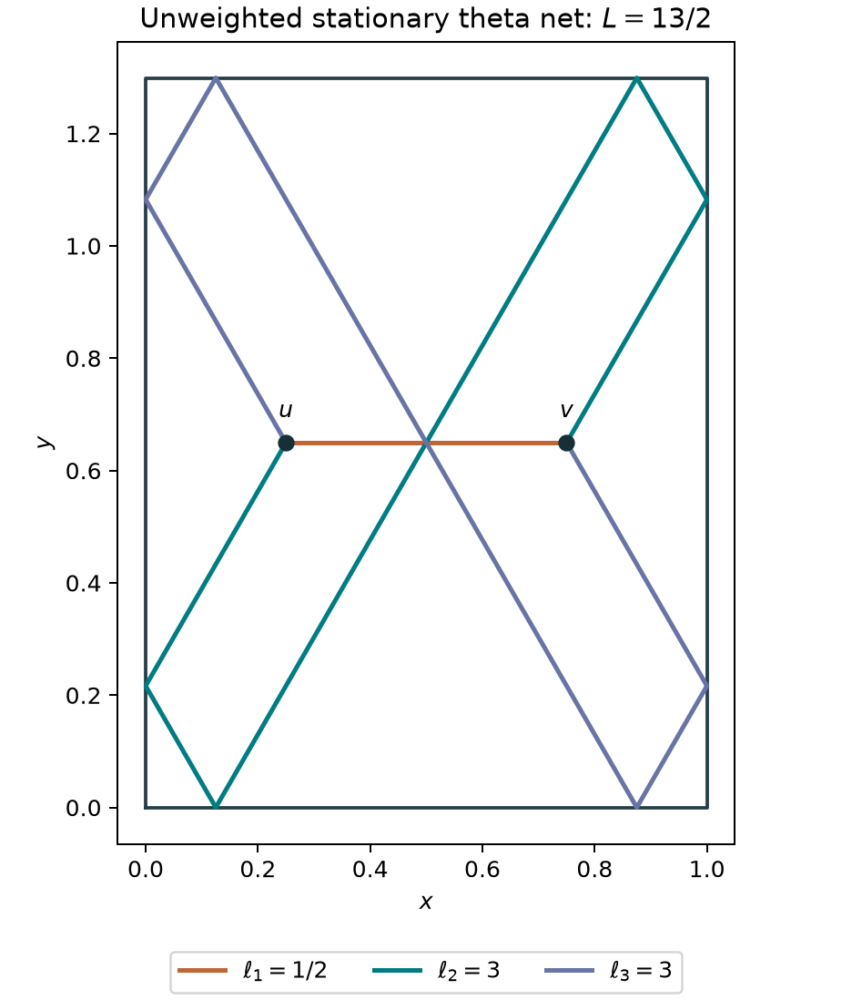

Stationary nets as the input
Start from the nets.
Find the spectral object.
The geometric input is an ordinary unweighted geodesic net in a bounded planar domain: straight edges, specular boundary reflections, and balanced junctions. We investigate which spectral quantity detects it, without choosing a contact Hamiltonian in advance.
01 / Geometry before operators
An algebraic trivalent net
In a rectangle \(\Omega=(0,a)\times(0,b)\), consider three reflected paths between two free interior vertices. Their unfolded edge vectors are
We vary ordinary total length, with no prescribed edge times. For \(\sqrt3a/2<b<\sqrt3a\), its unique minimizing relative displacement and edge lengths are
The outward unit tangents sum to zero at both junctions; all three angles are \(120^\circ\). The total length is \(L_*=2a+2\sqrt3b\). Common translations supply two zero modes, so this is a family of nets rather than an isolated net.
The rectangle \(a=1\), \(b=3\sqrt3/4\) gives lengths \(1/2,3,3\) and total length \(13/2\). Folding the paths gives specular reflections and no corner hits in the displayed representative.

Why the geometric calculation is exact
The length is the convex function \(F(r)=|r|+|r-(2a,2b)|+|r-(2a,-2b)|\). At the displayed critical point its three unit vectors are \((1,0)\), \((-1/2,\sqrt3/2)\), and \((-1/2,-\sqrt3/2)\). Their sum vanishes. The relative Hessian is positive definite because the vectors are not parallel; convexity gives the unique minimizing displacement. The two common translations do not change the length. Folding unfolded straight lines proves the reflection law.
02 / A spectral measuring device
What “resolvent kernel” means
Let \(A=-\Delta\), with a specified boundary condition. If a source function \(f\) is given, solve the linear equation
The inverse \((A+\kappa^2)^{-1}\) is called the resolvent. Its kernel is the function \(G_\kappa(x,y)\) that writes the solution as
Thus the kernel is the response at \(x\) to a unit point source at \(y\). On an eigenfunction with eigenvalue \(\lambda\), the inverse simply multiplies by \((\lambda+\kappa^2)^{-1}\). We use it to measure spectral information. The constant spectral shift \(\kappa^2\) introduces no spatially varying force.
For a reflected image path of length \(\ell\), the planar free kernel factor has the exact representation
Here \(K_0\) is a standard modified Bessel function. This identity follows from its integral representation. The edge time is integrated independently on each edge. Minimizing the exponent over that time gives
Consequently the graph’s exponential action is ordinary total length, multiplied by \(\kappa\). This recovers the geometric junction rule. At finite parameter the Bessel amplitudes and vertex integrations remain present.
03 / Exact, but not yet a trace over nets
A graph integral with spectral coefficients
The eigenfunctions are real and orthonormal. The two-dimensional logarithmic singularity has an integrable cube. Heat regularization justifies the expansion and its limit. The same identity holds for Dirichlet and Neumann kernels when \(\kappa>0\).
This is the pointwise cube of a kernel. It is not the operator trace of the cubed resolvent. It uses triple eigenfunction products in addition to eigenvalues. These distinctions matter for the intended correspondence.
04 / Geometry does not fix the spectral sign
Reflection signs can suppress a net contribution
Neumann reflection terms have positive image signs. Dirichlet reflection terms carry alternating signs. The billiard geometry is the same, but the spectral contributions can differ.
We now sum a complete specified orbit of the geometric triangle: all four common reflection matrices and every common lattice translation. The three edges use the same reflection matrix in this orbit. Triples with different reflection matrices on different edges are outside this calculation.
Write \(J_{\rm N}\) and \(J_{\rm D}\) for these orbit contributions. Their proved large-parameter ratio is
At \(a=1\), \(b=3\sqrt3/4\), the leading Dirichlet coefficient cancels exactly. The contribution survives at the next order:
Exact orbit formula behind the cancellation
Let \(b_\kappa(q)=g_\kappa(|q|)g_\kappa(|q-(2a,2b)|)g_\kappa(|q-(2a,-2b)|)\) and \(w_a(q)=a-2\operatorname{dist}(q,2a\mathbb Z)\). The exact grouped integrals are
These weights follow by pushing forward the two vertex positions under their sum and difference in each coordinate, then periodizing. At the length minimum \(q_*=(d,0)\), the weight ratio is \((a-2d)/a\), which proves the leading ratio. The first nonzero Dirichlet term follows from the next local Laplace coefficient; the full derivation is in the research note.
05 / A step toward an exact length-side correspondence
The net is an exact threshold
The Neumann orbit is exactly the Laplace transform of a positive continuous length distribution:
For the rectangle above, this density is zero for \(s<13/2\) and positive for \(s>13/2\). Its threshold is therefore exactly the stationary net’s length. Just above the threshold,
The exact formula comes from writing each Bessel edge as a Laplace transform, convolving the three edge-length densities, and integrating the two vertex positions. Positivity justifies the interchanges. The threshold follows from the global minimum of total length; its local power and coefficient follow from the nondegenerate relative Hessian.
This is a continuous length distribution with a geometrically determined threshold. We have not replaced it by a discrete exact sum over stationary nets.
Independent direct cubature of the exact convolution formula gives the following ratios to the proved threshold coefficient:
| Length excess \(s-13/2\) | \(\rho_{\rm N}(s)/(s-13/2)^{3/2}\), divided by its limit |
|---|---|
| \(0.03\) | \(0.9997689\) |
| \(0.01\) | \(0.9999230\) |
| \(0.003\) | \(0.9999769\) |
This calculation uses the exact edge-length convolution, with no large-parameter kernel approximation. It checks the local threshold law independently of the previous Bessel integration.
06 / Independent numerical checks
What was tested
- Four rectangles and three optimizer starts per rectangle recover the algebraic net displacement; the largest error is below \(4\times10^{-8}\).
- Direct edge-time quadrature and the Bessel kernel agree within \(1.4\times10^{-17}\) in four checks.
- Direct integration of the complete common-parity orbit checks the boundary-sign calculation in four aspect ratios. At \(\kappa=30000\), the normalized Neumann coefficient differs from its proved limit by approximately \(6.4\times10^{-7}\) relative.
- The full Neumann graph invariant is evaluated independently using cosine eigenfunctions and reflected-image cubature. The largest spectral cutoff is \(512\) modes per coordinate.
| Full Neumann invariant, \(\kappa=3\) | Value |
|---|---|
| Cosine cutoff \(64\) | \(0.007945116277330199\) |
| Cosine cutoff \(256\) | \(0.007952967219792776\) |
| Cosine cutoff \(512\) | \(0.007953431693843374\) |
| Independent reflected-image cubature | \(0.0079535081\) |
| Empirical standard error of cubature | \(8.6\times10^{-8}\) |
The spectral partial sums have a remaining positive tail. The cubature uncertainty and observed integration-cutoff stability are empirical, not rigorous error bounds. Agreement here does not certify a continuum error at the displayed decimal precision.
Original geometry and single-sector checks · Reflection-orbit, threshold-density, and Neumann checks · Proofs in the research note
python3 -m pip install -r research-requirements.txt python3 scripts/geodesic_first.py python3 scripts/net_reflection_signs.py
07 / Research status
What the next test must decide
Complete the geometric grouping beyond common reflection parity, and determine whether the net’s length singularity survives in the full spectral quantity. Then identify whether a natural operator trace gives this information, or whether eigenfunction multiplication data are essential. A computational advantage over solving the original spectral problem has not been demonstrated.
The input remains ordinary stationary nets. The quantum model is an outcome to discover. Hyperbolic domains remain part of the target but have not been tested in this geometry-first calculation.
Earlier evidence audit and control calculations · Earlier contact-insertion identities · Geometry-first source · Reflection-sign source